GNUPLOT入門
gnuplot入門(テキスト)
アステロイド
\[ x = a \cos^3 \theta, \qquad y = a \sin^3 \theta \]
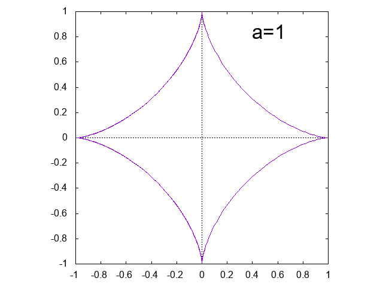
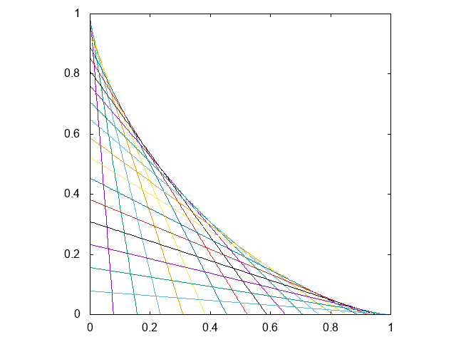
アステロイド曲線
包絡線としてのアステロイド
リサージュ曲線
\[ x = \sin a t, \qquad y= \sin b t \]
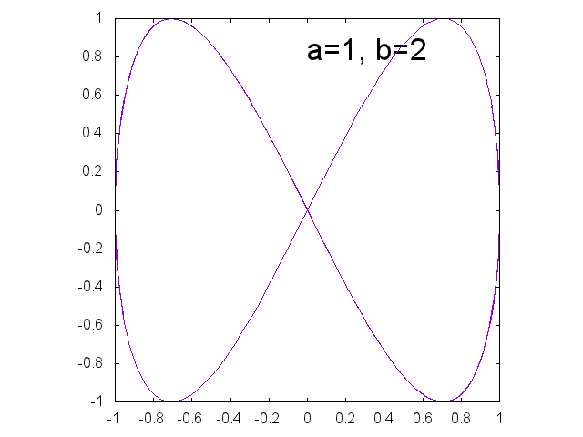 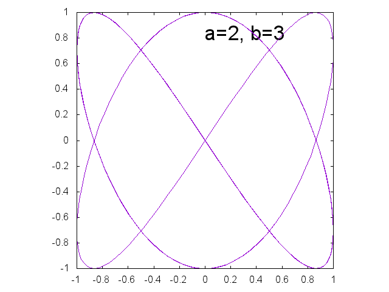 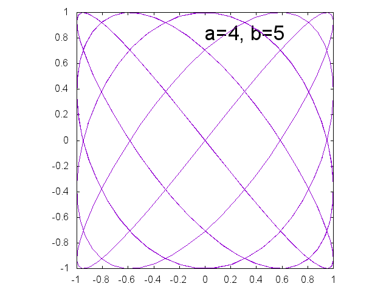
アルキメデスの渦巻線
\[ r = a \theta \]
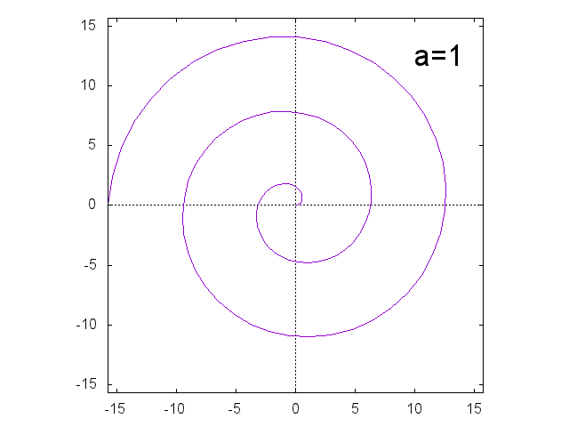
正葉曲線
\[ r = \sin a \theta \]
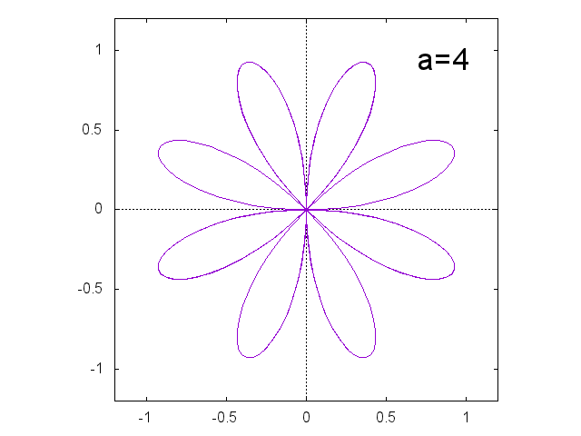 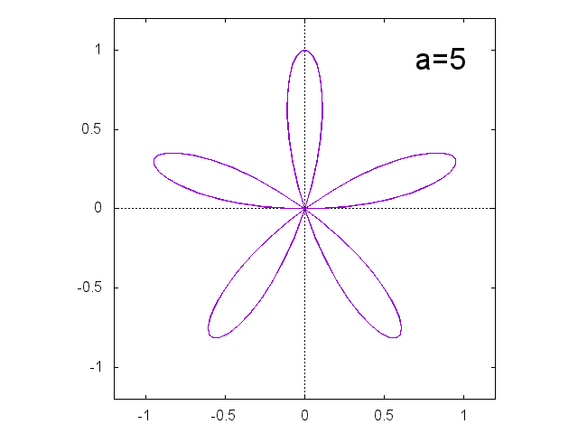 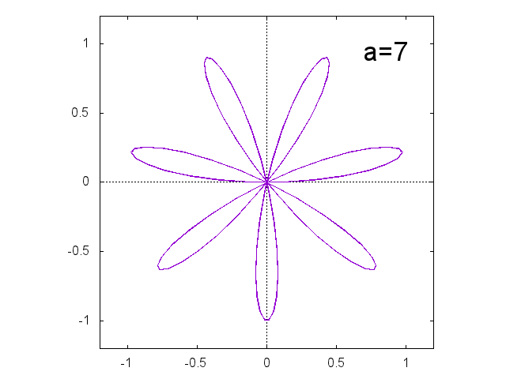 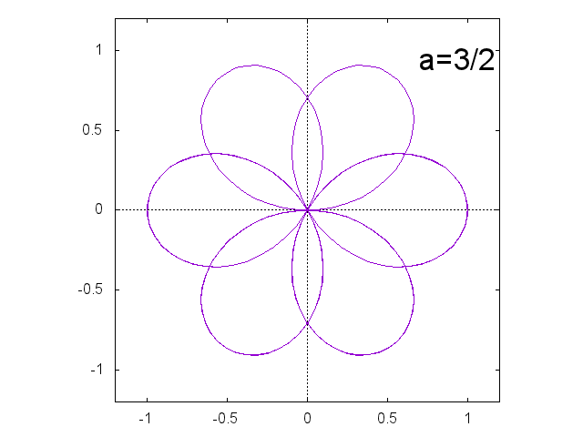
リマソン \[ r = a + b \cos \theta \]
\(a=b\) のとき、極方程式 \(r=a(1 + \cos \theta)\) で表される曲線をカージオイドという。
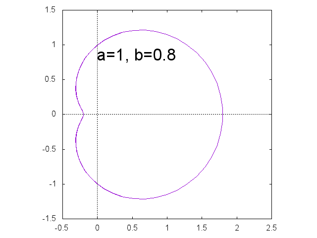 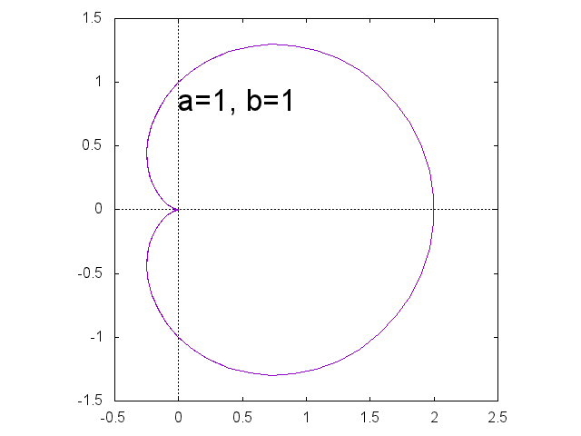 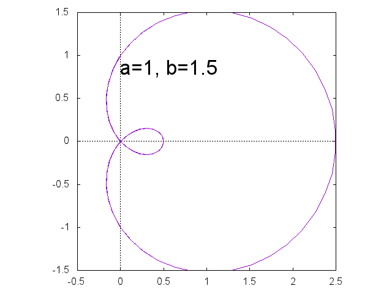
ミルクティーを照らす光
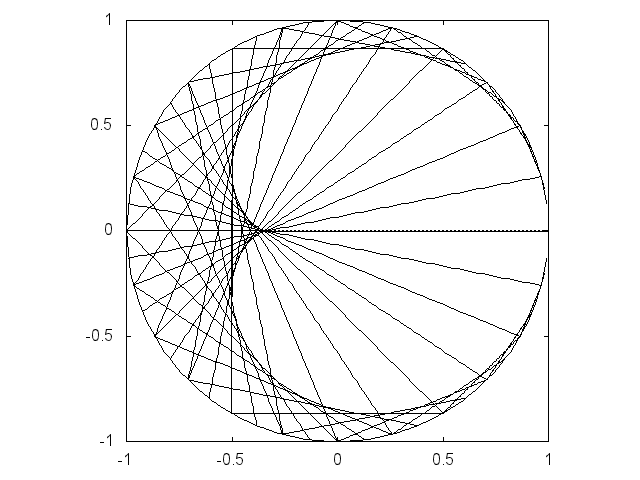
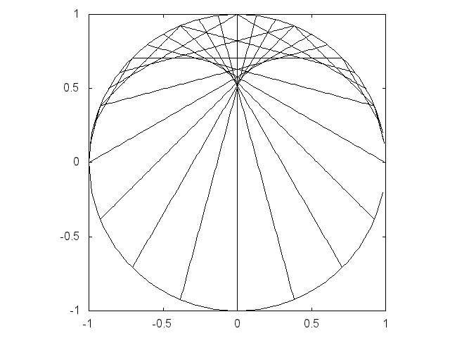
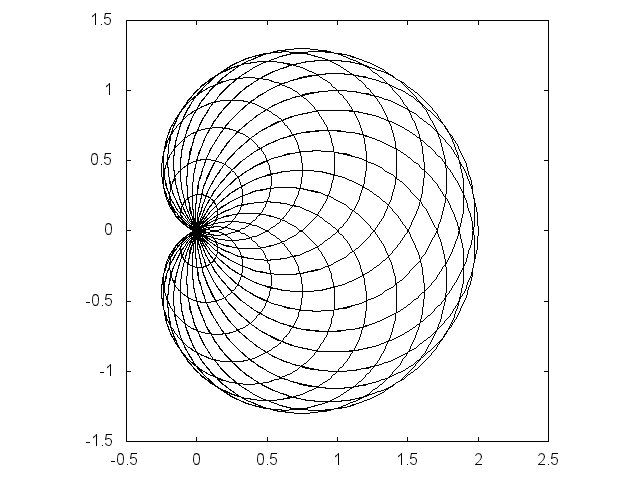
点(1, 0)を通る光線が円で反射
\(y\)軸に平行な光が半円で反射
原点と点(1, 0)を中心とする半径の１の円の周上の他
の点を直径とする円の包絡線としてのカージオイド
レム二スケート \[ (x^2+y^2)^2 = 2 a^2(x^2-y^2) \]
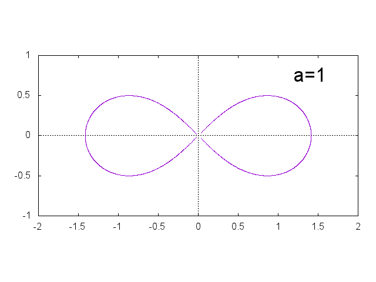
カッシーニの卵型曲線 \[ (x^2+y^2+a^2)^2 = 4a^2x^2 + b^4 \]
\(a=b\) のときは、レム二スケートである。
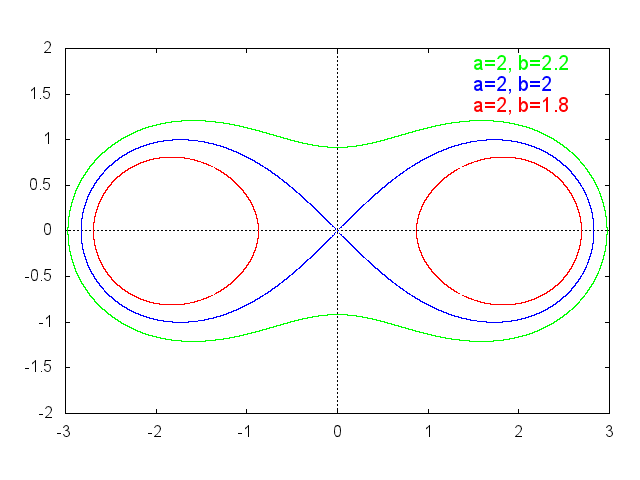
サイクロイド
\[ x = a(\theta - \sin \theta), \qquad y = a(1 - \cos \theta) \]
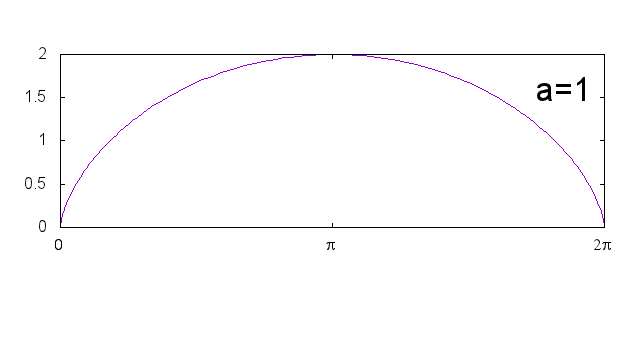